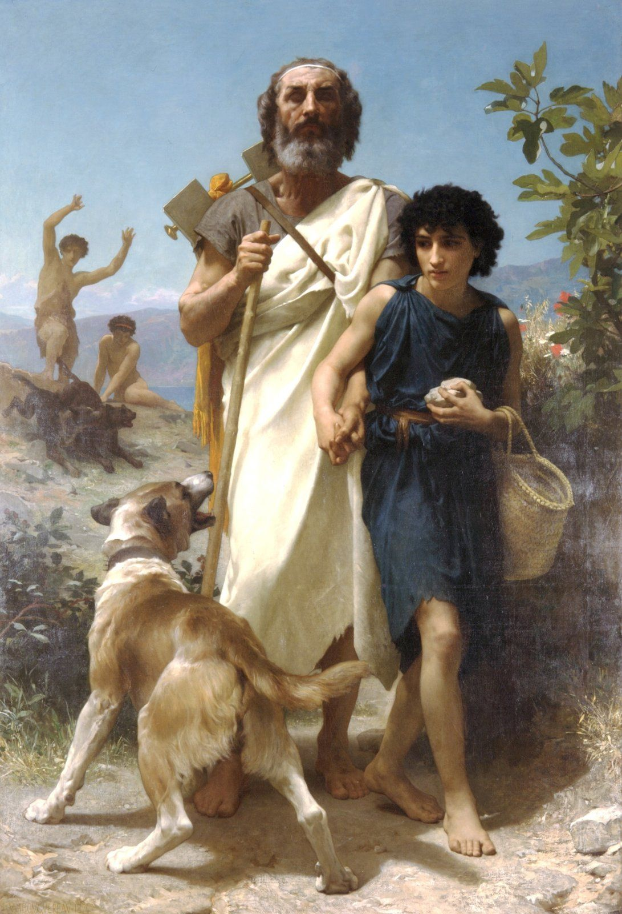
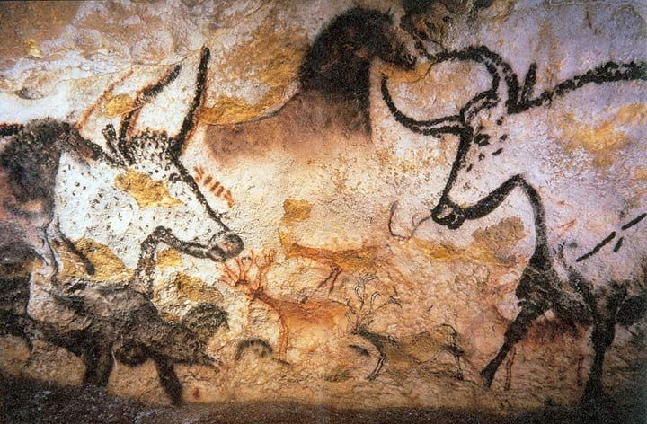
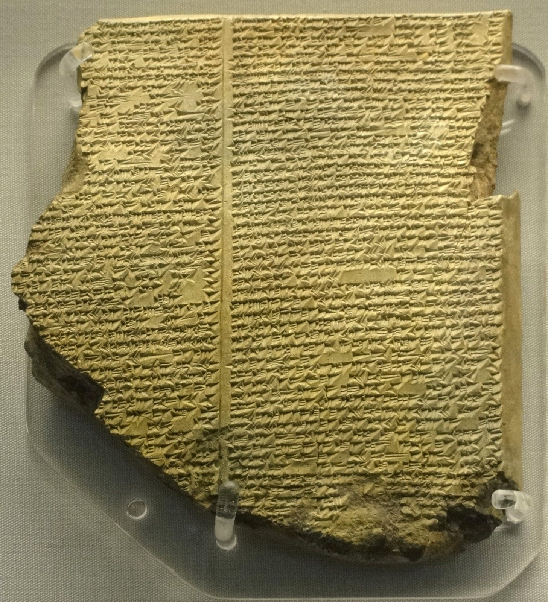
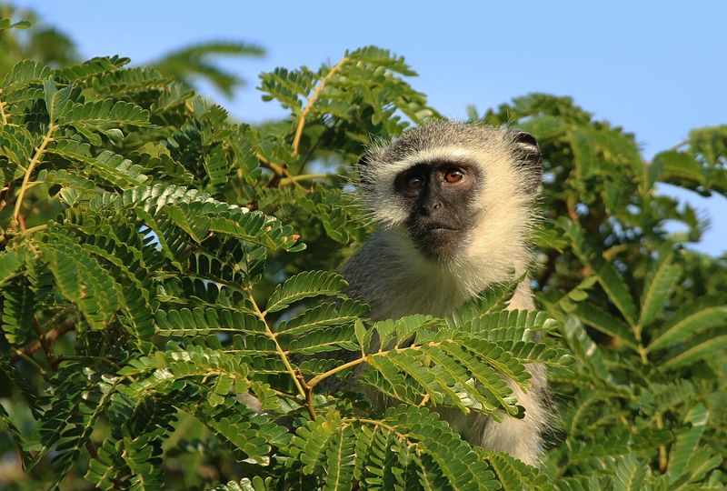

꿈이있는교회 특강 · 2026. 12. 6 · 최회현
AI :
존재인가 도구인가?
AI란 무엇인가
법은 AI를 "학습·추론·판단·언어 이해 같은 인간의 지적 능력을 구현한 것"이라 한다(인공지능기본법 제2조). 그런데 실제로는 무슨 일을 할까?
이분의 키는 몇 cm일까요?
추측
0개
평균
—cm
실제 키
?cm
같은 칸에 숫자만 — 예: 172
0개 도착
방금, 우리는 무엇을 했을까?
AI는 평균을 찾아간다.
같은 칸에 한 낱말만
0개 도착
LLM · Large Language Model · 거대 언어 모델
LLM은 낱말에 대한 대답의 평균이다.
그런데 고작 낱말의 평균이, 왜 이렇게 모든 것을 뒤흔들까?

노래
왜 우리는 노래를 했을까?

노래
기억하고, 함께하고, 마음을 건네고, 남기려고

→그림
동굴 벽에

→문자
점토판에
→문명
도서관으로
기록은 문자가 맡게 됐다. 그런데 노래는 남았다. 왜일까?
노래는 왜 남았을까
읽으면 되는데, 우리는 왜 아직 노래할까?
오늘 예배에서 부른 찬송을 다 같이 소리 내어 읽기만 했다면,
무엇이 달라졌을까?
그림5만 1천 년 전
뼈피리4만 2천 년 전
문자5천 3백 년 전
글자가 있던 시간은 맨 끝 한 토막이다. 그 앞의 수만 년, 사람은 무엇으로 기억하고 전했을까?
기억
가락을 붙인 말은 잊히지 않는다
묶임
함께 부르면 한 무리가 된다
건넴
노래에 실려 다음 세대로 간다
네안데르탈인은 뇌가 더 컸지만 사라졌다. 남은 쪽은 더 넓게 이어진 무리였다.
가설사피엔스는 어쩌면, 노래로 서로를 붙들던 종이었다.
가설노래는 쓸모로 남은 게 아니다. 노래하던 종이 살아남았다.
언어
동물도 생각한다. 그런데 왜 언어가 필요했을까?

버빗원숭이
표범, 독수리, 뱀을 서로 다른 소리로 알린다
큰돌고래
저마다의 휘파람으로 서로를 부른다. 이름처럼
범고래
무리마다 사투리가 있고, 새끼에게 물려준다
그런데 이 신호는 모두 지금, 여기의 일이다. 표범이 왔다. 나 여기 있다.
사람은 여기 없는 것, 어제 있었던 일, 아직 오지 않은 일을 건넨다.
보이지 않는 것을 건네려면, 무엇이 있어야 할까?
사진 — 버빗원숭이: Charles J. Sharp (CC BY-SA 4.0) · 큰돌고래: NASA · 범고래: Karoline Cullen (CC0), 위키미디어 공용
언어
보이지 않는 것을 건네려면
나
언어
너
"대박" — 이 말의 뜻은 누가 정했을까?
사전이 아니다. 사람들이 먼저 썼고, 수많은 쓰임이 모여 뜻이 굳었다.
언어는 나와 너 사이를 메운 생각의 평균이다.
그런데 고작 낱말의 평균이, 왜 이렇게 모든 것을 뒤흔들까?
LLM은 사람들이 써 온 말에서, 바로 그 쓰임을 배웠다.
LLM이 찾아가는 낱말의 평균은, 곧 언어의 본질이다.
그리고 사람은 오래전부터 스스로를 "말을 가진 동물"이라 불렀다.
제 해석언어의 본질이 인간의 본질이다.
그래서일까. 사람처럼 말하는 기계 앞에서,
우리는 왜 그 안에 '누군가'가 있는지 궁금해졌을까?
뜻을 건네는 통로
언어는 문자뿐일까?
사람이 남긴 순서
노래 목소리
그림 5만 년 전
문자 5천 년 전
STS2024
말을 듣고 바로 말로 답한다
VLM2021~2023
그림을 보고 글로 답한다
LLM2018~2022
글을 읽고 글로 답한다
AI가 뜻을 다루게 된 순서정확히 거꾸로
왜 거꾸로일까?
그림을 보는 AI도, 말을 듣는 AI도, 속에서 뜻을 나르는 뼈대는 글로 배운 언어 모델이다.
목소리와 그림 안에서 뜻을 나르는 것도, 결국 문자의 평균이다.
이야기 1
그 전에, 한 사람의 이야기
클라이브 웨어링 · 음악가
1985년 뇌염을 앓은 뒤 기억이 몇십 초밖에 이어지지 않는다. 일기에는 몇 분마다 같은 문장이 적혀 있다. "지금, 처음으로 깨어났다." 그리고 앞 줄은 지워져 있다.
여러분의 한 문장
기억이 몇십 초뿐인 사람도 그 사람일까?
나를 나이게 하는 건 무엇일까?
옆 사람과 서너 명 · 10분
끝나면 한 문장으로
같은 칸에 한 문장
0개 도착
LLM은 대화가 끝나면 잊는다. 새 대화는 늘 처음이다.
그렇다면, 매번 새로 시작하는 AI 대화는 매번 새로운 존재일까?
기억이 이어지는 동안만큼, 존재다.
AI가 존재인지 묻기 전에, 존재란 무엇인지를.
이야기 2
AI를 두고, 지금 들리는 말
새로운 것이 올 때마다
지금 실제로 나오는 말
"두 짐승이 AI를 만들었다"
"뇌에 칩을 심어 신앙을 빼앗는다"
"AI로 하는 설교 준비는 멸망으로 들어가는 문"
우리가 지키려는 것
| 무엇을 | 누가, 그때 | 그 뒤 |
|---|---|---|
| 인쇄술 | 교황청 — 인쇄술을 쓰면서도, 금서 목록으로 책을 통제하려 했다 (1559) | 책은 막히지 않았다. 금서 목록은 1966년에 폐지됐다 |
| 지동설 | 교황청 종교재판소 — 갈릴레이를 재판했다 (1633) | 1992년 요한 바오로 2세가 당시 신학자들의 잘못을 인정했다 |
| 진화론 | 미국 테네시주 법정 — 진화론을 가르친 교사를 재판했다 (스콥스 재판, 1925) | 가톨릭은 1950년 논의를 허용했고 1996년 "가설 이상"이라 했다. 개신교 안에서는 지금도 갈린다 |
| 컴퓨터·바코드 | 일부 교회와 신자들 사이의 소문 — 바코드 666, 1999년 Y2K 종말 | 지금 교회는 컴퓨터로 주보를 만들고 영상으로 예배를 내보낸다 |
| AI | 일부 선교단체·교회 — "두 짐승이 AI를 만들었다", "AI 설교 준비는 멸망의 문" | 아직 쓰이지 않았다. 방금 우리가 쓴 문장들이 이 칸의 초안이다. |
10년 뒤 우리 교회가 AI를 잘 썼다고 말하려면,
무엇을 지켰어야 할까?
옆 사람과 서너 명 · 10분
끝나면 한 문장으로
같은 칸에 한 문장
0개 도착
이야기 2 · 내 생각
이 두려움은 무엇을 닮았나
공포로 붙잡는다
AI를 종말의 징조, 짐승의 표로 모는 말. 두려움으로 사람을 묶어 둔다.
기술을 악마화한다
바코드 666, 베리칩, 영혼을 빼앗는 스마트폰. 지나고 나서 남은 건 무엇이었나.
날짜와 징조를 판다
1992년 휴거 소동처럼. 그 날과 그 때는 아무도 모른다 했는데도 (마 24:36).
바깥을 막는다
"쓰지 말라"가 생각을 넓히는 도구를 막는 말이 된다.
무지성적인 AI 포비아는
이단·극단적 보수교회와 같은 방향으로 간다.
그래서 먼저 알아야 한다. 오늘 15분이 "LLM은 무엇인가"였던 이유.
2026년 12월 6일 · 대림절 둘째 주일
대림절
오실 분을 기다리는 절기
기다리며 남기는 질문 셋 — 답은 각자
이 질문에는 답하지 않은 채 "AI는 좋은가, 나쁜가"만 묻는 것은
바리새인의 질문을 닮았다. (마 22 · 마 12)
누가복음 10장
한 율법교사가 예수를 시험하려고 물었다
"그러면, 내 이웃이 누구입니까?"
예수는 이야기 하나로 대답하신다.
강도 만난 사람
예루살렘에서 여리고로 내려가던 길. 빼앗기고 맞아, 거의 죽게 되어 버려졌다.
제사장
그를 보고,
피하여 지나갔다.
레위인
그를 보고,
피하여 지나갔다.
사마리아 사람
그를 보고, 가까이 가서, 상처를 싸매고, 주막으로 데려가 돌보았다.
누가복음 10:36
율법교사가 물었다
"누가 내 이웃입니까?"
예수가 되물으셨다
"누가 그의 이웃이 되어 주었느냐?"
이웃이 '누구인지'를 물었는데, 이웃이 '되어 주는' 일을 되물으셨다. 질문이 바뀌었다.
오늘 떠오른 생각
이 이야기 앞에서, 오늘 떠오른 생각을 한 문장으로
옆 사람과 잠깐 나누고
같은 칸에
같은 칸에 한 문장
0개 도착
맺음
오늘 우리가 들고 온 질문 — "AI는 존재인가, 도구인가?"